Kartlaget "Verdensarvbyen"
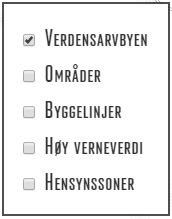
Bygningene markert med gul farge i kartlaget er oppført før ca. 1930, og viser bebyggelsen på Rjukan mot slutten av industrireisingsperioden i regi av Norsk Hydro. Denne tidsperioden er lagt til grunn for avgrensingen av verdensarvbyen.
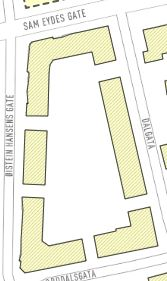
Gul bygning tilsvarer C-objekt i andre kulturminneregistreringer.
Kartlaget "Områder"
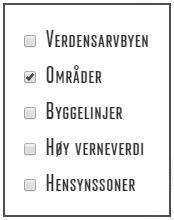
Gule områder viser enhetlige, historiske områder med verneverdi. Områdene er nærmere beskrevet i den områdevise beskrivelsen til kommunedelplan Rjukan.
Områder uten farge viser enhetlige områder med potensielle verneverdier, der verneverdiene ikke er avklart.
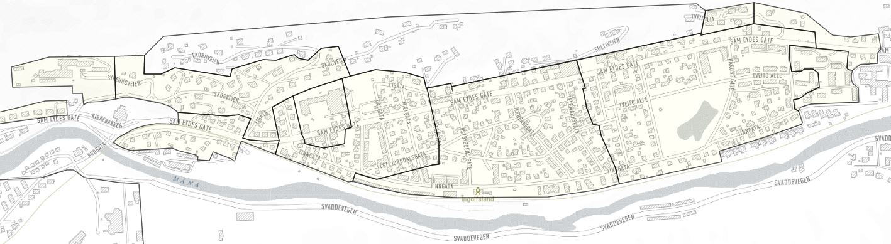
Kartlaget "Byggelinjer"
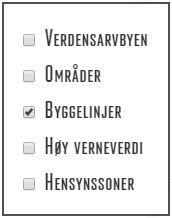
En byggelinje viser til en tenkt linje som bebyggelsen i et område er plassert i forhold til. Mens frittliggende bygninger og punkthus som regel ikke er definert av noen fast byggelinje, ligger det ofte en slik imaginær linje til grunn for plasseringen av bygninger langs en gate, på en rekke eller innenfor et kvartal. Bruk av byggelinjer gjør at bebyggelsen framstår fastere, strengere og mer organisert, og blant annet kan brukes til å strukturere og samle en ellers variert bebyggelse. Byggelinjer blir også brukt til å definere rammene omkring plasser, gater og andre romdannelser.

Innenfor mange delområder på Rjukan er bebyggelsen tydelig plassert i forhold til en eller flere slik tenkte byggelinjer som bestemmer hvor på tomta bygningen skal plasseres. Byggelinjen kan ta utgangspunkt i ulike forhold som avstand fra bygning til vei, avstand til annen bebyggelse, dybde på gårdsrom etc., og kan styre bredden på bygninger.
En byggelinje angir ofte vegglivets plassering mot vei, men kan i mer komplekse situasjoner fastlegge flere forhold samtidig, som størrelse og plassering av utstikkende bygningsdeler (eks. inngangspartier) og plassering av uthus i forhold til hovedhus.
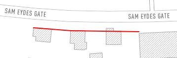
Private Bøen: Etablert byggelinje, i stor grad basert på reguleringsplanen fra 1918.
Kartet for øvrig: Historisk strukturerende byggelinje som viser plasseringen av vegglivet på bygningen (hovedvolumet).
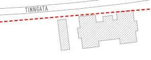
Støttende byggelinje der det ikke tidligere har vært oppført bygninger eller der den historiske byggelinjen er oppløst eller uklar.
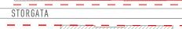
Private Bøen: Supplerende byggelinje som viser byggelinjen fra den første private byggefasen (bygninger oppført før 1918).
Tveito: Supplerende byggelinje som benyttes der Egne Hjem - hus er plassert med vegglivet på inngangspartiet i byggelinjen. (Gjelder Egne Hjem - hus av type 11A-C).
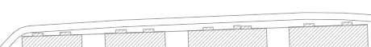
Bakenforliggende, historisk byggelinje som organiserte bebyggelsen mot hagerommene, men som ikke vektlegges sterkt i dag.
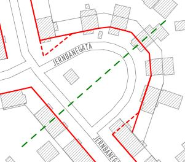
Grønne, stiplede streker viser imaginære linjer som ble brukt for å skape symmetri og mønsterdannelser i bebyggelsen, eller for å knytte sammen bygninger på hver side av en åpen plass.
Kartlaget "Høy verneverdi"
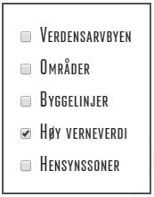
Bygninger i kartlaget er markert med oransje farge, og vurderes å ha høy selvstendig verneverdi
Alle bygninger som er definert som signifikante for verdensarven er vist med oransje farge. Øvrige bygninger innenfor de gule sonene i områdekartlaget er vurdert i forhold til selvstendig verneverdi. Uthusbygninger er ikke vurdert.
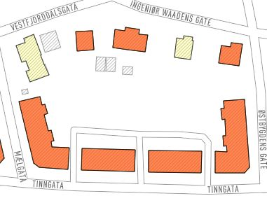
Verneverdien er i hovedsak knyttet til bevarte originalmaterialer og opprinnelig fasadeutforming, men kan også gjenspeile arkitektonisk betydning.
Rød farge tilsvarer A- eller B-objekt i andre kulturminneregistreringer.
Kartlaget "Hensynssoner"
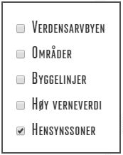
Kartlaget viser bevaringsområder i kommunedelplan Rjukan som
er juridisk bindende og som har tilhørende bestemmelser og
retningslinjer.
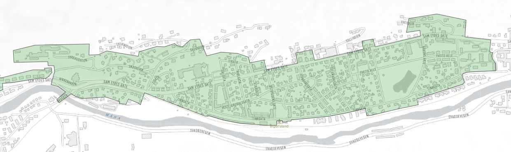